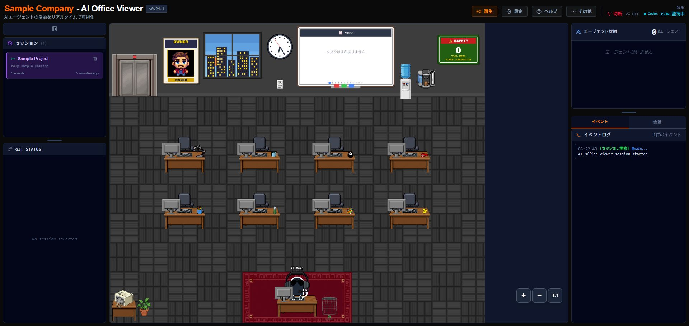
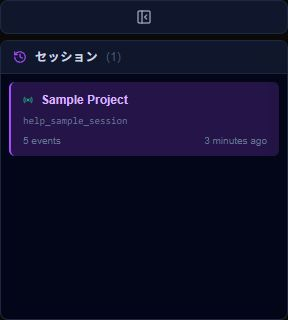
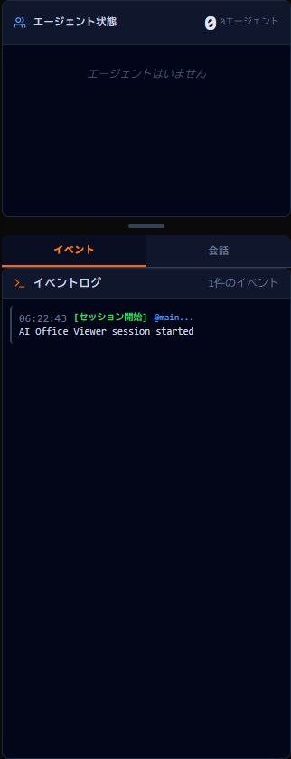

Viewerの見方
AIの活動を、キャラクター・状態・イベント履歴で読み取ります。
{kind=link}

Main AgentとSubagent
- Main Agent
- 現在のセッションの中心となるAIです。利用環境に応じた名前（例: Codex Main）または設定したカスタム名で表示されます。
- Subagent
- Codexが補助AIを起動した時に、別のキャラクターとして表示されます。終了すると状態が更新され、画面から退出します。
複数セッションがある場合はサイドバーから表示対象を切り替えます。上部のStatusやClockは接続状態や時刻を確認するための表示です。
エージェント状態と視覚演出
| 状態の例 | 意味 |
|---|---|
| 準備中 | 作業開始の準備をしています。 |
| 考え中 | 次の処理を整理している状態として表示します。 |
| 作業中 | ツール利用などの作業イベントを処理しています。 |
| 確認中 | 結果の確認や検証に相当する状態です。 |
| 待機中 | 入力や次のイベントを待っています。 |
| 完了 | ターンまたは担当作業が完了しました。 |
オフィス内ではデスク作業、移動、ホワイトボード、休憩、考え中などの演出があります。吹き出しも状態を分かりやすくする短い表示です。
{kind=link}

イベントログと会話
「イベント」タブの「イベントログ」では、セッション開始、ツール開始、ツール完了、子エージェント開始、子エージェント終了、ターン完了などを時刻順に確認します。行を選ぶと、その連携元から提供された範囲の詳細を確認できます。
「会話」タブは、連携元が本文を提供する場合にユーザープロンプト、AI応答、thinking、ツール呼び出しを表示します。ツール呼び出しは既定で折りたたまれています。
表示が止まったように見える時は、Codex側で新しい操作があるか、ManagerのBackend API・Live Events・JSONL Monitorが正常かを確認してください。
{kind=link}

セキュリティとプライバシー
Codex Adapterは、セッション状態、ツールの種類、エージェント状態、時刻、表示用のプロジェクト名など、安全な表示用メタデータを扱います。Codex連携では、プロンプト本文、コマンド本文、標準出力・標準エラー本文、ツール出力、AI回答全文、パスワード、トークン、秘密情報をAdapterから転送しない設計です。
Replayも本文を除外した専用履歴を使用します。一方、Live Viewerの「会話」タブとイベント詳細は、Claude CodeやOpenCodeなど別の連携元が本文を提供した場合、プロンプト、応答、thinking、ツール入力などをローカル画面に表示できます。画面共有やスクリーンショットを行う前に内容を確認してください。
127.0.0.1で行われます。AI Office Viewer自身が作業内容を外部公開する用途ではありません。CodexやVS Code自身の通信については、それぞれのサービス設定が適用されます。